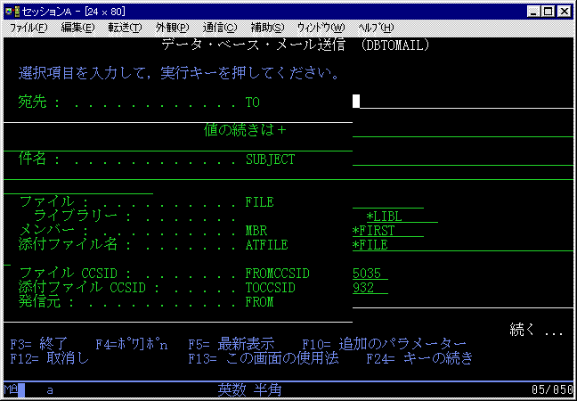
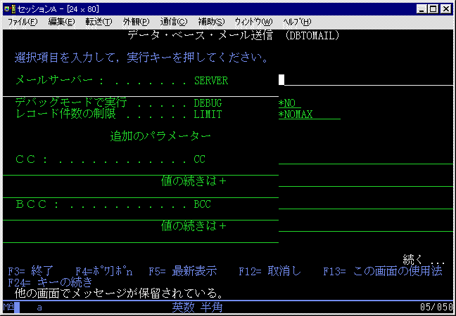

AS/400 ＤＢ添付メール送信コマンド DBTOMAIL V1.00掲載日: 2001/04/01, 更新日: 2001/04/01 |
＜概要＞データベースファイルをフィールドごとにカンマ区切り（ＣＳＶ形式）のテキストファイルに変換し、
メールの添付ファイルとして送信するコマンドとプログラムです。
メールサーバーは、AS/400でも Unix などでも構いません。
＜制限事項＞「，」「”」などの文字のエスケープは処理していません。FLOATなど一部変換できないフィールドタイプがあります。 不正データがデータベースに混在している場合処理エラーとなります。   |
[戻る] |